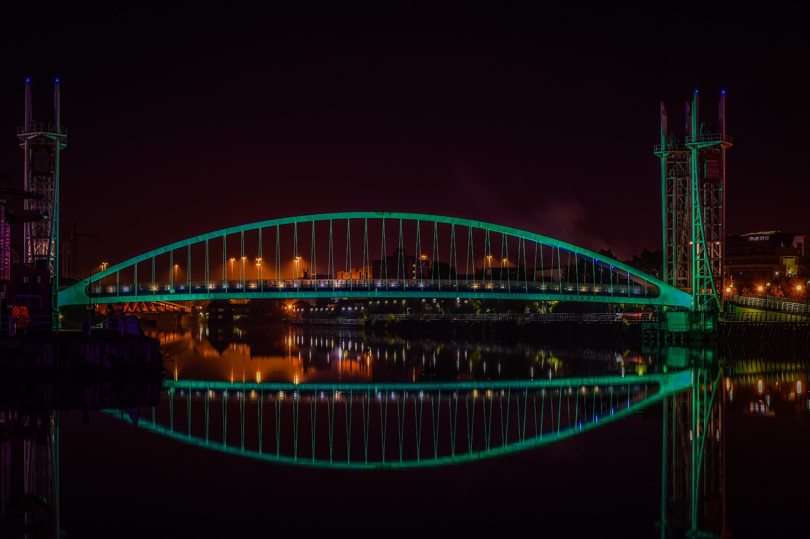
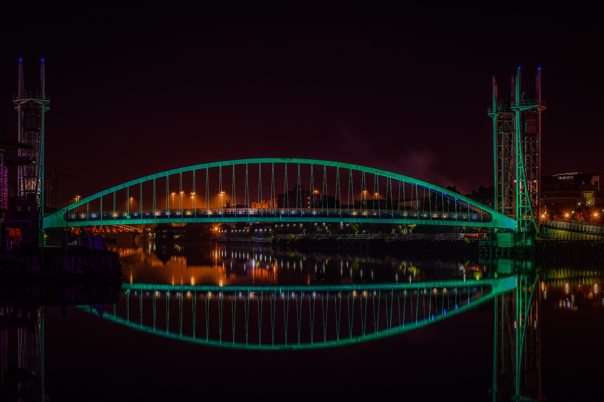

Manchester United F.C.
Manchester United F.C.

In his first full season (2020/2021 season), Fernandes managed to get 45 goal involvement across all competitions, more than any other midfielder in Europe. Bruno finished the Premier League as the 3rd best scorer, and the 2nd with most assists, the most in the competition across all midfielders. In the Premier League he was the star of the team, and helped United to finish in 2nd. United hadn’t finished in the top 4 for 2 seasons in a row since the departure of Sir Alex Ferguson in 2013.

On the first leg, PSG won 2-0 against Man. United in England, and Man. United had its best player, Paul Pogba, been sent off. On the second leg, Man. United had 9 injuries and 1 big absence, the chances of success were almost zero, playing at PSG's stadium. Playing on counterattack, United managed to win 3-1, scoring the last goal off a penalty kick during extra time. The match was definitely a comeback to remember among all soccer fans around the world. But it was even more special to the Man. United fans, and a match to forget for those in Paris.

My name is Daniel De Medeiros and I'm a Manchester United fan since I was about 5 years old. I didn't get to enjoy the golden era of Manchester United because I was too young, but I grew up playing videogames using this club and later on discovered its beautiful history.

 


@united.cloud
@manchesterunited_fans4life
@manunitedzone